I design B2B, marketplace and learning platforms with many roles, states and steps: payment approvals, a seller’s search for answers, a learner’s path to a verified certificate. Each case shows the problem, the decisions I made and the evidence behind them, and says plainly where that evidence stops.
I’m Kateryna, a UI/UX designer and Webflow developer from Kyiv, currently based in Poltava, Ukraine, and working remotely. Until October 2026 I was a Middle UI/UX Designer at Mavericks Agency, where I designed client platforms and websites, from OLX for Business to a public learning platform, and built many of them in Webflow.
Agency work taught me to start from a business goal, to build what I design in Webflow and to ship on deadline. Before that I worked on UX for a non-profit, finished the Sigma Software University UI/UX internship, and designed promotional graphics for a fitness club.
Now I’m moving into product design for complex B2B and learning platforms: workflows with several roles, statuses that must be unambiguous, audit trails, and decisions people make under time pressure. I test with real users before I polish, and I prototype in code so the logic can be clicked through.
Full-time, Kyiv, until Oct 2026. Client platforms and websites, including OLX for Business and Kyiv Educational Hub; Webflow development. Promoted to Middle in April 2026.
2024 – 2025
UI/UX Designer · Sigma Software University
Internship, Nov 2024 – Jan 2025. Real-case UX/UI projects; recognised as the strongest mentee on the team.
2024 – 2025
UX Designer · PLAN B 2030 e.V.
Part-time, remote, Oct 2024 – Jan 2025. UX research and design guidelines.
2024
UI/UX Designer · Gulls & Galley
Freelance, Jul – Sep 2024. A full website UI for a commercial client, from wireframes and interactive prototypes to final design.
2023 – 2025
Advertising Graphic Designer · EveryDay Fitness
Freelance, Dec 2023 – Mar 2025. Promotional materials and digital banners.
How I work
Evidence before opinion
I run moderated sessions with people who do the job and report what they did, not what I hoped.
Prototypes that behave
I build prototypes in code with AI tools, so states and handoffs can be tested end to end. The decisions stay mine.
Every state has a next step
Rejected, blocked, failed: in finance tools the unhappy paths are daily work.
Product designer with 3+ years in web and mobile design, moving from agency work into complex B2B products. I work AI-first: I build end-to-end websites and fully interactive, coded prototypes with AI tools, so ideas can be clicked through and tested in days, not weeks — while research, logic and every design decision stay mine. I design workflows with several roles, statuses and handoffs, check them with real users, and build what I design in Webflow, so I know what it takes to ship.
Experience
Middle UI/UX Designer · Mavericks Agency
Web & digital agency, Kyiv · UI/UX Designer, promoted to Middle in April 2026
Designed and delivered 10 full-cycle projects from concept to client handoff: platform redesigns, large websites (15+ pages) and landing pages.
Sole designer of the Kyiv Educational Hub redesign (3 months): rebuilt the information architecture around the learner’s path and designed courses, tests, a career roadmap, profile and certificate verification for desktop, tablet and mobile.
Sole designer of the OLX for Business portal (business.olx.ua): a smart search with an AI assistant and all its states, category price and demand analytics, package comparison and pages explaining new payment rules, for desktop, tablet and mobile.
Ran comparative user interviews on two course-page variants; the chosen layout helped users orient themselves faster.
Designed and built client websites and landing pages in Webflow; introduced AI into the workflow to build sites end to end and turn designs into coded, interactive prototypes for client reviews.
Conducted WCAG audits and fixed accessibility and usability issues on client websites.
Presented concepts to international clients and PMs, gathered feedback and iterated; created brand identities and the agency’s Behance case studies.
UI/UX Design Intern · Sigma Software University
Recognised as the strongest mentee on the team in an intensive internship on real-case projects.
Ran heuristic evaluations, IA analysis, user flows and usability testing; designed a mobile app and its promo landing page.
Worked in Scrum and Kanban with a cross-functional team.
UI/UX Designer · PlanB 2030
International GreenTech project, German digital platform, remote
Led UX improvements based on user interviews and usability testing; designed wireframes, prototypes and final UI.
Worked with developers and stakeholders in an English-speaking team.
UI/UX Designer · Gulls & Galley
E-commerce website, freelance
Designed a full website from wireframes and interactive prototypes to final UI, with a design system of reusable components.
Worked with developers and marketing; optimised mobile, tablet and desktop layouts for responsiveness and accessibility.
Selected projects
FinGuardSelf-initiated · B2B fintech · 2026
AI-assisted workspace where accounts payable teams investigate risky invoices and hand a clear decision to the approver.
6 moderated usability sessions in two rounds · 40-finding heuristic review · 3 prototype iterations · coded prototype and accessible HTML/CSS handoff
OLX for BusinessMavericks Agency · Marketplace B2B
Redesign of the portal where companies buy OLX business tools: smart search with an AI assistant, price and demand analytics for sellers, package comparison.
Sole designer · new feature from a PM brief · every search and AI state · desktop, tablet, mobile
UX audit of a Kyiv gift and flower store: 35 ICE-scored hypotheses across the purchase path, with an executive summary of the business benefit in numbers.
Desktop + mobile · 48-slide deck and team table · revenue forecast +17–33% (Baymard-based) · ~40 hours
Accounts payable tools are good at catching a suspicious invoice. FinGuard is about the next hour: who investigates it, what counts as proof, and how the approver gets a decision they can trust.
This is a self-initiated project. The usability findings come from six real moderated sessions with accounting professionals. Version 3 applies those findings and has not been tested with users. The screens below show it in its final visual design. The screens show v4, a visual refresh of v3: the same flows and states with a new type, colour and component system. Nothing here has run in production, so I list the metrics I would measure instead of results.
01 · Problem
Detection is solved. The work after it isn’t.
I compared Ramp, Tipalti, Stampli, Airbase and Basware across twelve capabilities, from invoice capture to audit trail. Capture, PO matching, approval routing and fraud signals are mature in all of them. Basware comes closest to my idea: it explains each exception with a reason, evidence and a recommended action.
Competitor analysis and key findings. The opportunity I took from it: “How might we help finance teams prioritize, investigate and resolve complex payment exceptions while keeping humans in control of AI-assisted decisions?”
The gap is what happens after the flag. The specialist pulls context from the ERP, a spreadsheet, email and Slack, calls the vendor, and writes a note that the approver may or may not read. Ownership, proof and the final decision are scattered across tools.
Constraints. I worked alone and without a budget, so participants came from my own network of accountants rather than AP specialists. There was no real company data, so I invented one company and kept every screen consistent with it. I chose to build the prototype in code so every state could be clicked through, which meant keeping the scope to two roles.
To keep the design concrete, I worked with one fictional company and one exception throughout.
Nova Logistics · INV-10423 · €24,800 · due tomorrow
Signals
Bank details changed 3 days ago · amount 47% above the 6-month average · €1,300 more than PO-77821
Value proposition: FinGuard helps finance teams investigate and resolve invoice and payment risks before approval. It sits next to the ERP and the bank. It does not replace them.
02 · Users
Three people touch one invoice, and each needs a different answer.
These are proto-personas built from desk research, not validated by interviews. What mattered most was the handoff between them.
Investigates · primary
Emma, AP Specialist
I need to understand what’s wrong, what needs my attention first, and what I should do next.
Works in SAP, Excel and Outlook. Needs a prioritised queue, the reason for each flag and a clear next action.
Takes escalations
Daniel, Finance Manager
I need to know where the problems are before they become payment delays.
Needs ownership, status and an audit trail he can reconstruct later.
Decides
Sophia, CFO / Approver
Don’t give me another alert. Give me enough context to decide quickly.
Needs a short summary: what was flagged, what was verified, what is still open.
Proto-persona for the primary user. Daniel and Sophia have their own.
The hero workflow follows that chain: Detect → Explain → Investigate → Resolve → Approve.
03 · Structure
I mapped the product before drawing a single screen.
I kept three maps apart on purpose. The mind map lists product areas and features. The information architecture fixes navigation and hierarchy. The user flow holds statuses, decisions, loops and handoffs between roles. Mixing them in one diagram hides the decisions that matter.
Two structural choices came out of this. Exception details are five sibling tabs (Overview, Risk Review, Investigation, Evidence, Activity), so a specialist never loses the invoice while digging. Approval Details is a separate screen under Approvals, not a sixth tab, because the approver has a different job and should not wade through the investigation.
The first user flow: invoice received → automated checks → investigation → approval. Testing later showed what it was missing: what happens after a rejection, a block or a failed transfer (see 06).
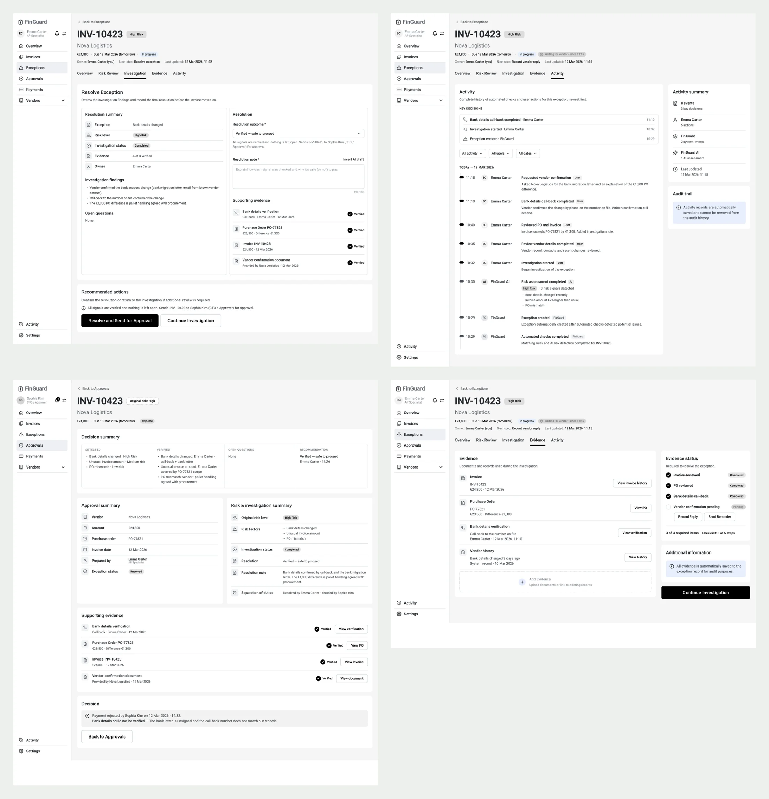
Wireframes of the core screens, before colour and visual design: resolving an exception, the activity log, approval details and evidence. Structure and content were settled here first.04 · Key decisions
Trust comes from showing who checked what.
1. AI recommends. People decide.
The AI flags signals and explains why they matter together, and every assessment says what data it used. It never approves, blocks or closes an exception. A participant in round 2 named this as the thing she liked most: “good that it doesn’t have much power.”
Trade-off. Auto-blocking risky payments would be faster. I chose accountability: someone must be able to explain every decision to an auditor.
2. Risk level and check state are two different things.
In v1 every signal was a red pill, before and after anyone checked it. Participants asked whether all signals were equally serious and who had confirmed them. In v3 the signal keeps the same warning style, and a separate status tag beside it shows its check state: needs review, in review, verified or not verified, with who checked it and how on hover. Green now means only “verified”, never “low risk”.
v1
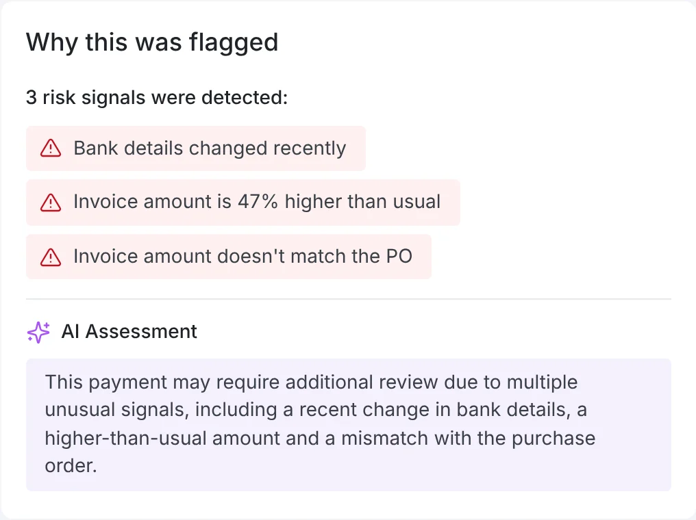
v1. Three identical red signals. Nothing says what has been checked.v3
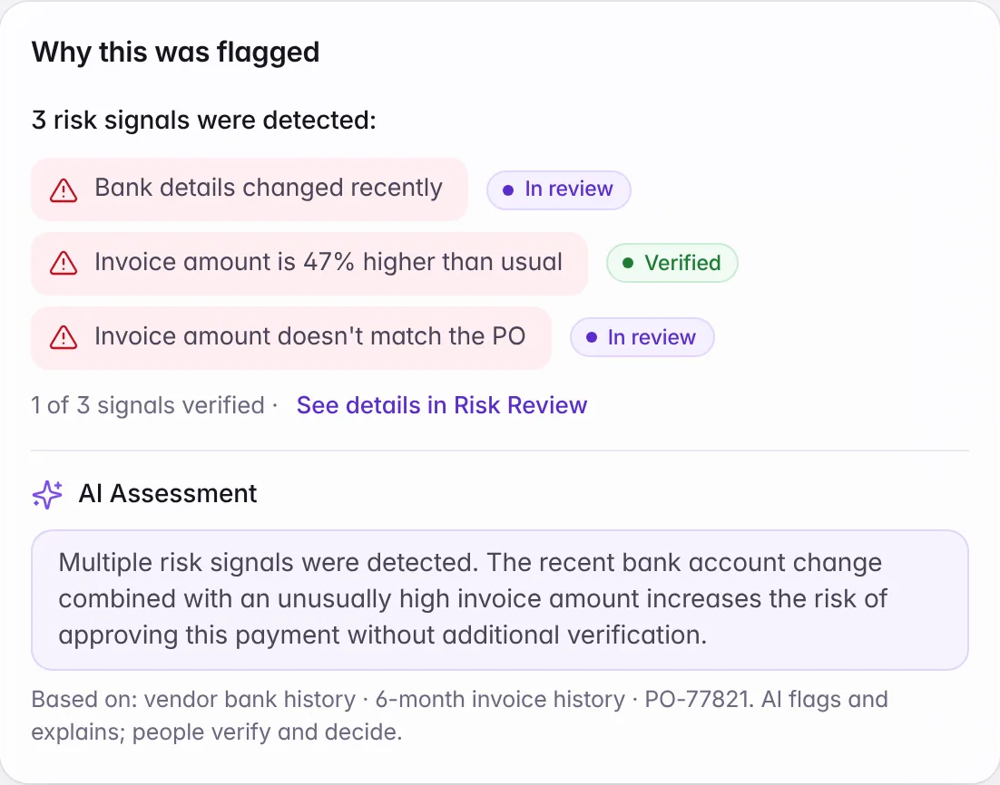
v3. The signals keep their warning style; a status tag beside each says whether it is in review, verified or not verified, and the count shows progress.
Trade-off. All signals share one warning style, so severity isn’t visible at a glance; it sits in the tooltip and on the Risk Review tab. I accepted that, because the question people asked in testing was “has anyone checked this?”, and in a payment tool green must never be read as “safe to pay”.
3. Resolving needs proof. Exceptions need a reason.
In v1, Resolve opened with “Investigation status: Completed” and “4 of 4 verified” before the vendor had confirmed anything. All four round-1 participants hesitated here. Now Resolve stays locked until the required steps are done. Emma can still resolve early, but only “with exception”: she writes why, and the approver sees it. There are four outcomes instead of one: Verified — safe to proceed, Verified with conditions, Escalated for further review, Not verified — do not pay.
v1
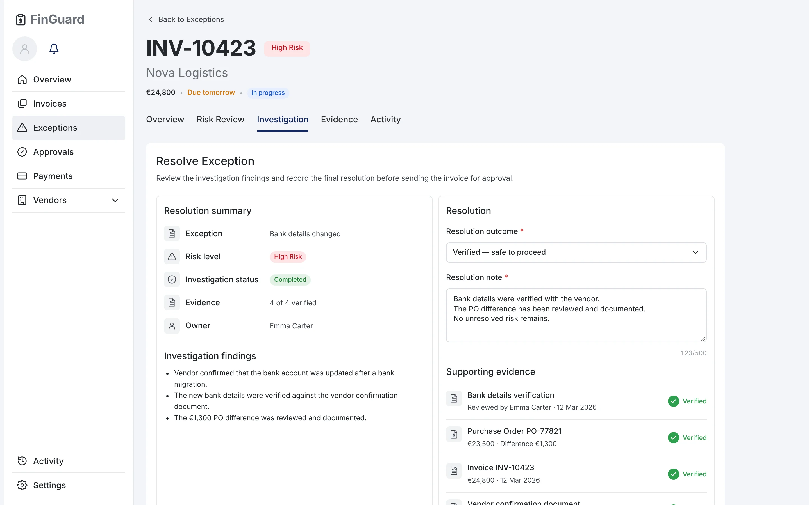
v1. Everything reads as complete, even when it isn’t.v3
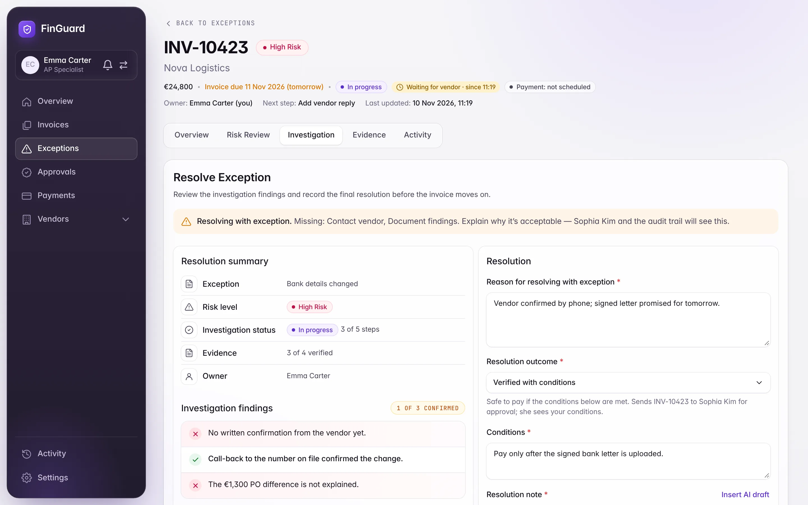
v3. Missing steps, open questions with an action next to each, and the PO marked “Not explained”.
Trade-off. More friction for Emma on every invoice. It is acceptable because a wrong “resolved” sends €24,800 to a possibly fraudulent account.
4. The approver gets a decision summary, and can’t approve her own work.
One round-1 participant wanted the whole story in one place, without opening five tabs. Approval Details now opens with Detected → Verified → Open questions → Recommendation, plus the name of the person who recommends. Separation of duties is explicit: whoever resolves the exception cannot approve the payment.
Approval Details. The approver reads one summary instead of five tabs.
05 · Testing and iteration
Two rounds of testing changed most of the screens.
6moderated sessions, accounting backgrounds
40findings in my heuristic review of v1
3prototype versions
5tasks per session, from triage to payment
Round 1 · v1 · four participants
Core task: as an AP specialist, investigate the Nova Logistics exception and decide whether it is safe to send for approval. I logged each issue as observation → problem → severity → design change.
What we saw
Who
Severity
What changed in v2
Unsure whether they could resolve before the vendor confirmed; Resolve said “Completed” while Evidence said “pending”
4 / 4
Critical
Resolve locked until required steps are done; “resolve with exception” needs a reason that the approver sees
Asked whether “Scheduled” means the money has left
4 / 4
Major
Payment timeline with future steps; new statuses Sent and Failed
Couldn’t tell what Approve, Request Changes and Reject would do before clicking
4 / 4
Major
One line of consequence under each decision
Read “Verified — safe to proceed” as a guarantee; asked who took responsibility
3 / 4
Major
Outcome descriptions, decision author, open questions listed
Couldn’t see who confirmed each signal, or how
3 / 4
Major
Check state per signal with name, time and method
Key decisions were lost in a long activity log
3 / 4
Major
“Key decisions” block and filters in Activity
I then reviewed every v1 screen against usability heuristics. The 40 findings, merged with the test results, became the v2 backlog. All 40 were addressed in v2.
Round 2 · v2 · two participants
P5 is an accountant with 1.5 years of experience. P6 is an accounting assistant. Several v1 problems were gone: both understood why Resolve was locked, and P6 read the payment status correctly and rated that task 7 of 7. Others had moved somewhere new.
“If there are no notes, I can still tick it. That’s kind of suspicious.”
P6, on closing “Document findings” without writing anything · translated
New problem in v2
Who
Severity
Change in v3
A required step could be ticked without any note, which unlocked Resolve
2 / 2
Critical
Ticking opens a form; the step closes only with a written finding
“Record Reply” was unclear; P6 recorded a vendor reply with no document
2 / 2
Major
Renamed “Add Vendor Reply”; an evidence file is required
Couldn’t find how to stop a payment without a hint (SEQ 1 of 7)
1 / 2
Major
“Stop Payment” as a visible action during the investigation
Read the invoice due date as the payment date
1 / 2
Major
“Invoice due” label plus a separate payment chip in the header
Wanted to see the original documents, not tables
1 / 2
Major
Preview of the original invoice, PO and vendor letter with source and date
PO showed green while the €1,300 difference was unexplained
1 / 2
Major
PO marked “Not explained” until the vendor explains it
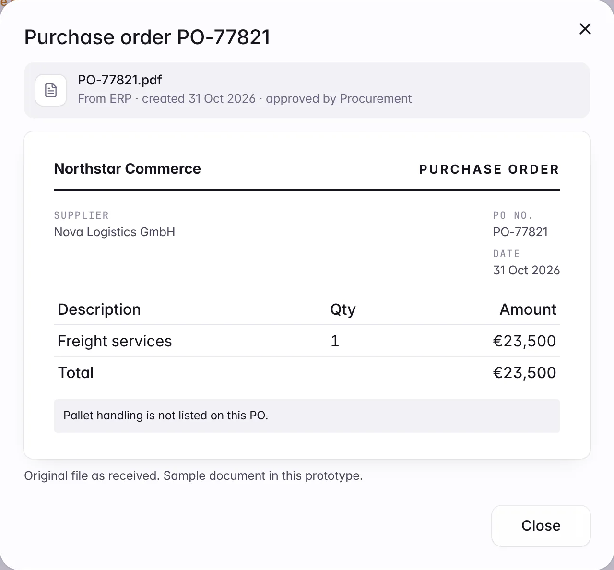
v3. The original PO opens in place, with its source and date. The €1,300 pallet handling is visibly missing.
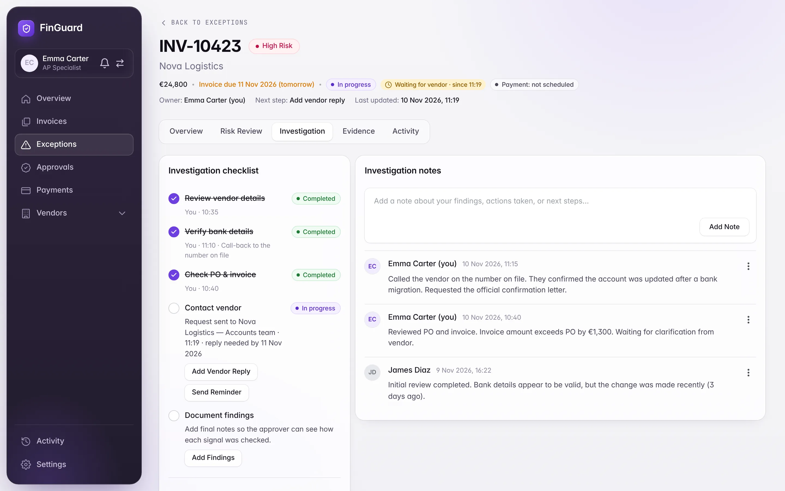
v3. Investigation shows who owns the next step, how long we’ve waited for the vendor and when it was last updated.
Limits of this round
Two participants is a small sample. Most round-2 findings were seen by one of the two, and I kept that count visible instead of rounding it up. In P6’s session I prompted too often, so I weighted that session’s task results lower. One task lost its meaning because an earlier task had already resolved the exception; I reordered the script afterwards.
06 · Edge cases
Every end state has a next step.
Version 1 covered the happy path plus Request Changes and Reject, and Reject was a dead end. Testing showed that the unhappy paths are where people get stuck. In v3 every final state leads somewhere, and every way back requires a new resolution and a new approval. Nothing is paid by accident.
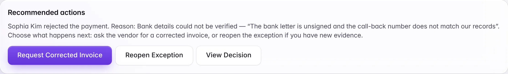
After a rejection, Emma sees Sophia’s reason and two ways forward instead of a dead end.
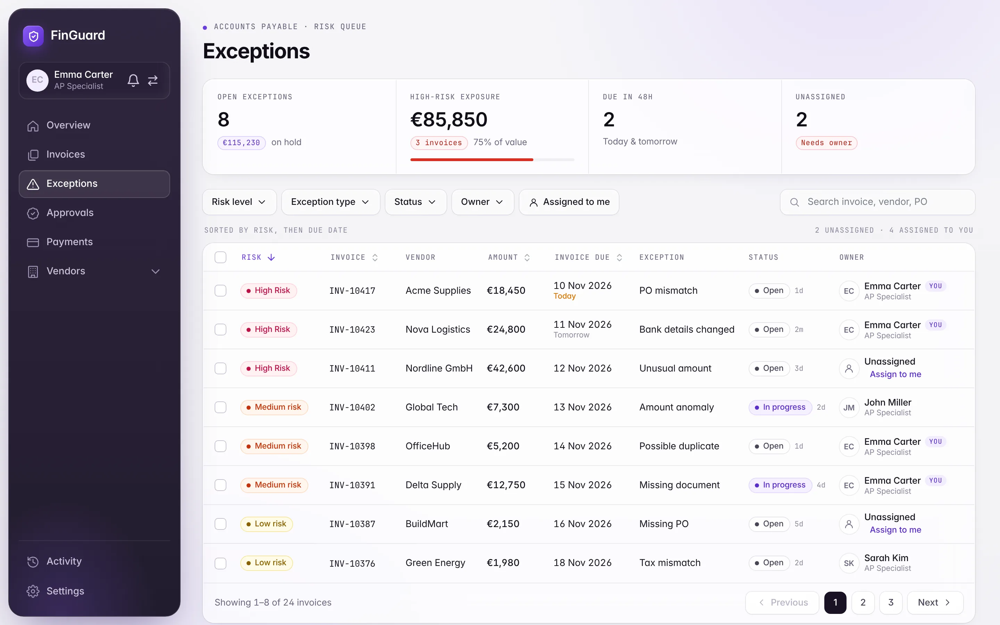
The queue sorts by risk, then due date, and says so. Owner, time in status and “Assign to me” answer round-1 questions.
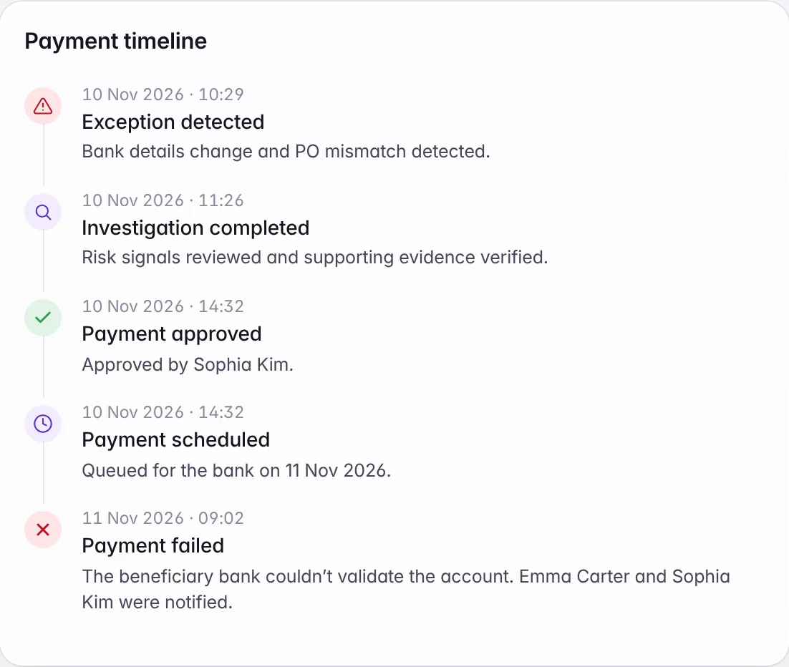
A failed transfer shows the bank’s reason and a retry. It also appears as a banner in the queue, where the AP specialist works.
07 · Outcome
Validated in six sessions, not proven in production.
The result is a working prototype of the full flow for two roles: queue, investigation, evidence, resolution, approval, payment, and the branches for changes, rejection, blocking and failed transfers. The final version, with the v3 flows in the refreshed visual design, can be opened and clicked through like a product.
Later I refreshed the visual layer in v4 without changing a single flow: a dark sidebar, mono labels for data, a KPI strip on the queue, calmer buttons and pill-shaped status badges that keep the same colour meanings. The v3 screens in this case are shown in the v4 style; v1 screens stay as they were.
For handoff I also wrote semantic, accessible HTML and CSS for three key screens: the queue, exception details and approval. Checking every colour token against WCAG AA showed three that failed in the prototype (due dates, the Stop payment button and a secondary grey used for text); the markup uses fixed values. See the markup →
If FinGuard were built, these are the numbers I would track, with a baseline measured before launch:
Time to resolve an exceptionFrom flag to resolution, split by risk level.
Approval rework rateShare of resolved exceptions sent back with Request Changes.
Resolved with exceptionHow often specialists skip a required step, and why.
Approver time per decisionWhether the decision summary really replaces opening the tabs.
Risk dismissed without evidenceShould trend to zero now that evidence is required.
Payments stopped before executionBlocked payments later confirmed as fraud or error.
08 · What I learned
What I learned, and what I’d change.
What I learned
The unhappy paths are the product. v1 handled approval well and broke on rejection, blocking and failed transfers. Testing showed that is where people actually get stuck, so I now map end states before screens.
Trust comes from showing who checked what. Participants trusted a signal more when they could see the person and the method behind it than when the AI sounded confident.
Colour carries promises. Green read as “safe to pay”. In a payment tool every colour has to mean exactly one thing, and writing the markup showed that some colours also failed contrast.
What I’d do differently
Recruit AP specialists, not only accountants. My participants understood invoices but had not worked a payment exception queue. Some confusion came from the domain, not the design.
Measure a baseline. I didn’t record time and SEQ consistently in every session, so I can’t compare versions with numbers. Next time I’d fix the metrics before the first session.
Moderate less. When a participant was stuck, I helped too early. A fixed rule for when to give a hint would make the results cleaner.
Test v3. The latest changes rest on one or two people. A third round would show whether the new friction in Resolve is acceptable.
How I used AI. I built the coded prototype with Claude and used it to structure notes from my session transcripts. The research sessions, the findings I kept and every design decision are mine.
Check accessibility earlier. The contrast failures surfaced only when I wrote the markup. Next time I’d check tokens against WCAG while choosing them, not at handoff.
Kyiv Educational Hub is a free public learning platform. Its interface was designed in 2019 for a different audience and a much smaller set of features. I redesigned the structure around the learner’s path, from finding a course to a certificate an employer can check, and added a career roadmap that keeps people moving.
ResearchAudit + comparative user interviews
RoleSole product designer
TeamMavericks Agency
Duration3 months
PlatformWeb · desktop, tablet, mobile
StatusDesigned, in development
About this case
This is client work done at Mavericks Agency. I designed the platform alone over three months; it is now being built, so there are no post-launch numbers yet. Screens are exported from the final Figma file.
01 · Context
The platform had outgrown its interface.
The 2019 design was a marketing site with a few paid courses attached. Since then the hub became a free public platform with public-sector partners, and the product grew: free courses, SCORM modules, events, offline groups, company courses, interactive video series, tests, certificates and a career programme.
None of that had a place in the old structure. My brief was to adapt the design and the information architecture to the platform’s current audience, and to leave room for features that will keep coming.
The goal I set for the redesign: a learner should always know what to do next, and leave the platform with something they can show an employer.
Constraints. Three months as the only designer. Dozens of existing courses in very different formats, from video to SCORM, all had to fit one structure. Time for one round of user interviews, so I spent it on the decision with the most impact, the course page. The platform is still being built, so there are no live numbers yet.
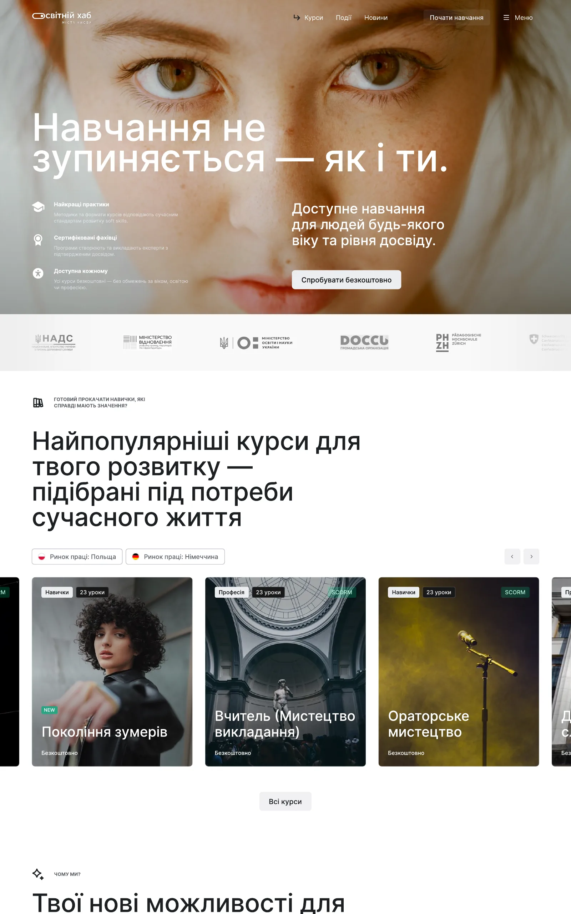
The new home page leads with what people come for: courses, the learning path and the certificate at the end of it.02 · What was broken
The old design hid the things learners needed most.
I started with an audit of the 2019 design and the live site, looking at it through the tasks a learner actually has: choose a course, study it, prove the result.
One course per screen. Course cards were full-width banners with only a title and a button. To compare two courses you had to open both.
Certificates were hard to find. The footer had a link called “How to find a certificate (instructions)”. If a feature needs a manual, the interface has failed.
Navigation named campaigns, not tasks. Labels like “Your opportunities” and “Free?” instead of Courses, Events, My courses.
Promises without product. The landing page advertised an “interactive résumé” that didn’t exist in the platform.
Jargon and low contrast. “SCORM format” in course titles with no explanation; yellow capitals on teal.
03 · Key decisions
Each change answers a problem from the audit.
For every decision below: what was wrong, what I changed, why it should work, and what I would measure once the platform is live. The reasoning rests on established usability principles and one round of comparative user interviews; the post-launch numbers don’t exist yet.
A catalog people can compare at a glance
Problem. One banner per screen, no attributes. Choosing meant opening courses one by one and remembering them.
Change. A grid of cards with category, type, number of lessons, price, and NEW and SCORM labels, plus category filter, sorting and search.
Why. People compare better when the facts sit side by side (recognition instead of recall). As the catalog grew to dozens of courses, filters became necessary: the more options on screen, the longer a choice takes, so narrowing them first keeps the decision quick.
Measure. Time from opening the catalog to enrolling; share of searches and filters that end in an enrolment.
2019
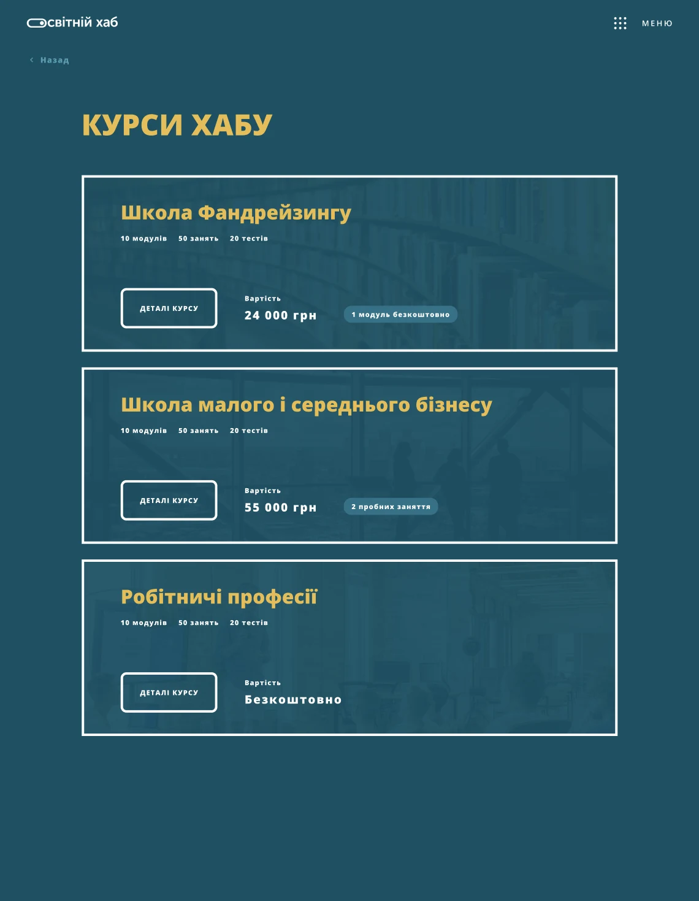
2019: three courses per screen and nothing to compare them by.2025
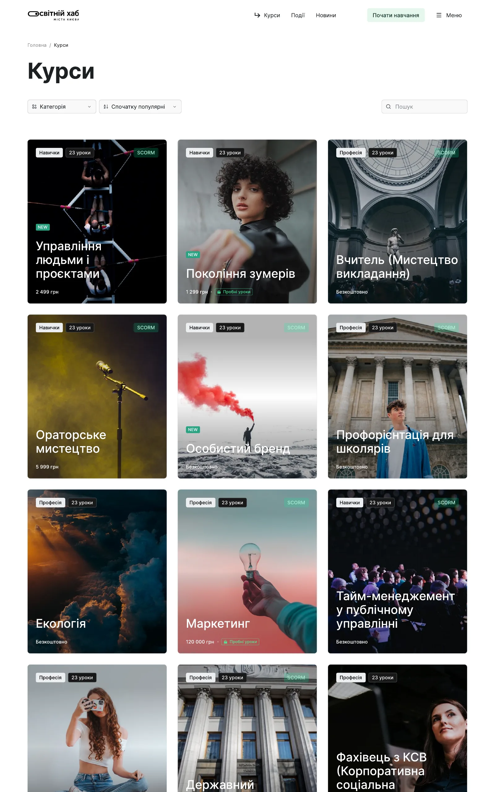
2025: a dozen courses per screen, each with the facts needed to choose.
Navigation named after tasks
Problem. Menu items described campaigns (“Your opportunities”, “Free?”), so people had to guess where things were.
Change. Courses, Events, News in the header; My courses, certificates, groups and homework in the profile menu; “How to find a certificate” moved from the footer into the main menu.
Why. People spend most of their time on other learning platforms and expect the same words there. Familiar labels remove a step of interpretation, and splitting public sections from personal ones matches the two modes people are in: browsing and studying.
Measure. Support questions about where to find certificates and courses; clicks on the old instruction page.
A course page with a persistent side panel
Problem. Learners jump between lessons, files and homework all the time. In a long page, each jump meant scrolling back up and losing their place.
Change. I wireframed two versions: A, a timeline of modules with homework and files as separate blocks; B, modules that expand into lessons and a side panel that stays with the learner. I showed both to users of the platform in interviews and asked them to find their way through a course.
Why. In the interviews, people oriented themselves faster in B, and it held more structured information without feeling crowded. The panel answers “where am I and what’s next” on every screen, which is what keeps people moving through a long course.
Trade-off. The panel takes width from the lesson content. I accepted that, because it saves a trip back to the course page each time.
Variant A
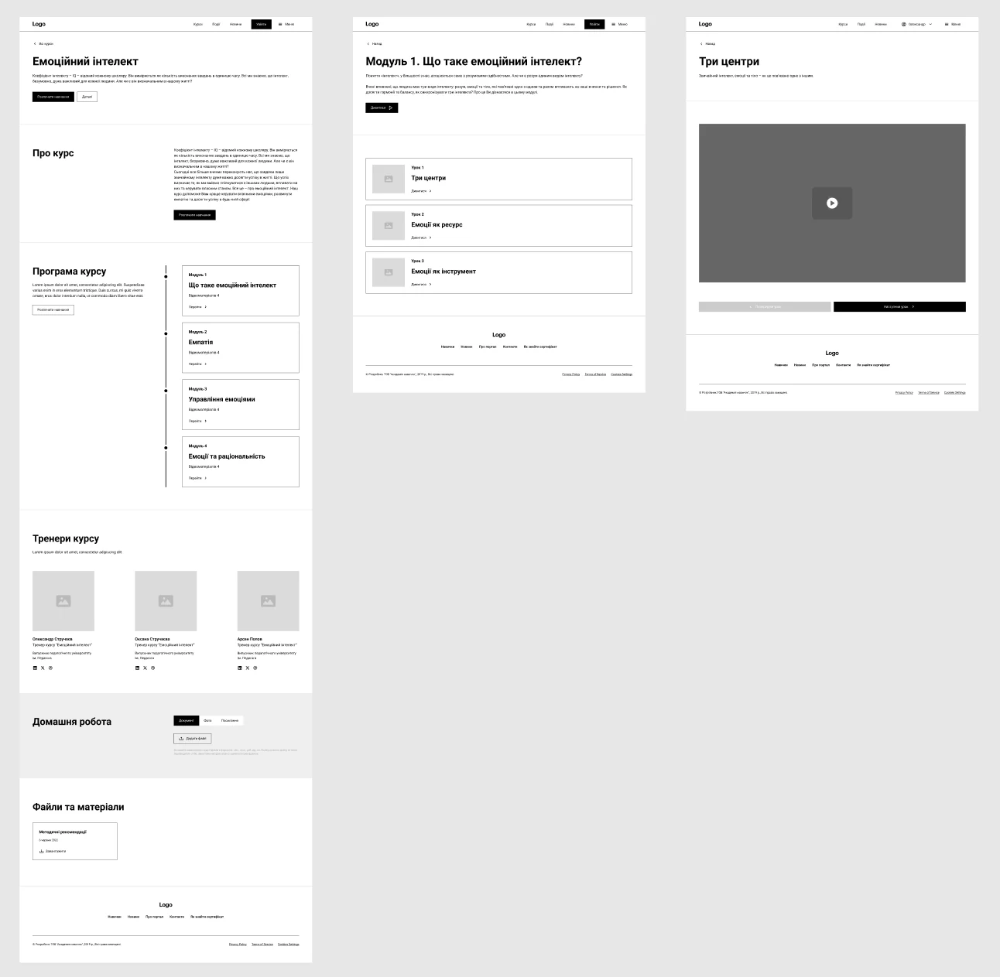
A: the programme as a timeline; homework and files in separate blocks.Variant B · chosen
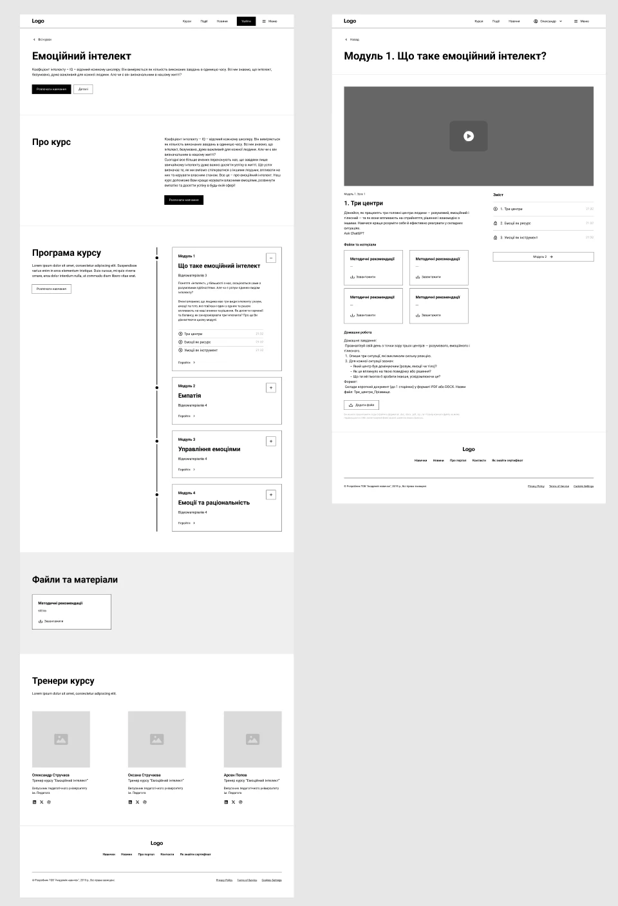
B: modules expand into lessons; each lesson has a side panel.
One layout for every kind of lesson
Problem. Lessons come as video, SCORM modules, text, tests and homework. Different layouts for each would make every new lesson type a new thing to learn.
Change. Content on the left, the course map on the right, progress marked in the map, for every lesson type.
Why. Consistency lets people learn the page once and then focus on the content. It also lets the team add new lesson types without redesigning the page.
Measure. Lesson completion and drop-off by lesson type.
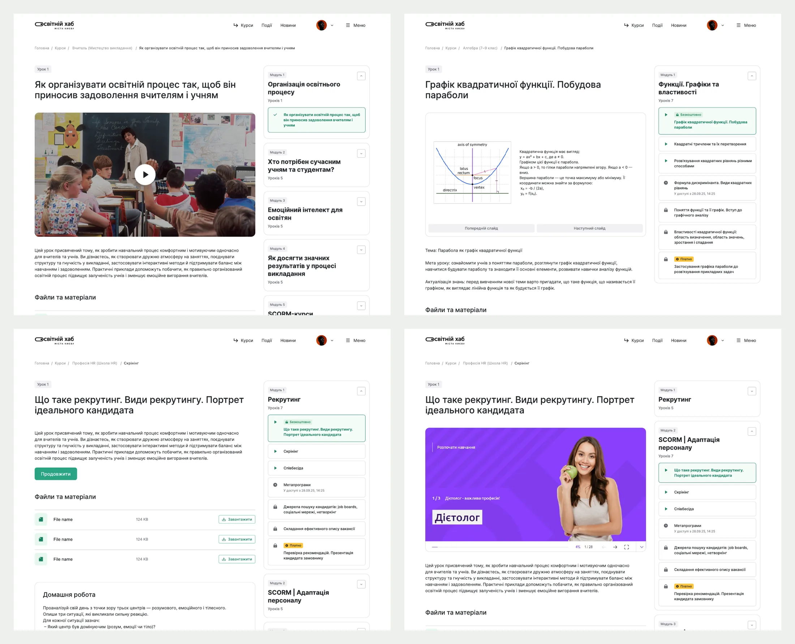
Video, slides, text and homework, all in the same frame.
Tests that match the skill
Problem. A language level or a work process can’t be checked fairly with multiple choice alone.
Change. Single and multiple choice, open answers, picking images, ordering steps, a career-guidance test and a language test that places the learner on the A1–C2 scale. Each test ends with a clear passed or failed screen and a next step.
Why. The format should test the skill, not the learner’s patience with the format. Immediate feedback after a test keeps people going; a failure screen with a retry is better than a silent score.
Measure. Test completion and retry rates.
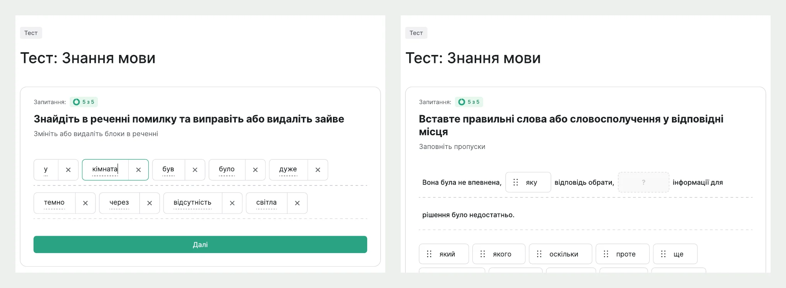
Language test: find and fix the mistake, then fill the gaps by dragging words into place.
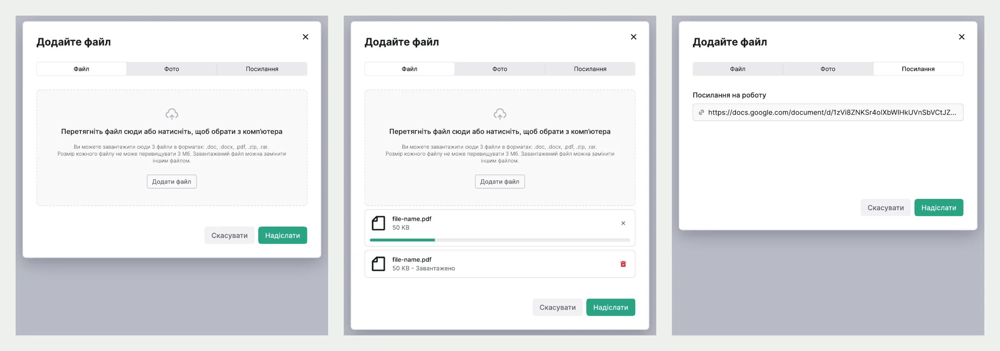
Homework upload: file, photo or link, with upload progress and a finished state.
Two formats got their own patterns. Interactive series are videos that pause for a decision; each choice leads to a different ending, so the learner practises a situation rather than watching it. Company courses let an organisation assign courses to its people, with a switcher when a learner belongs to more than one.
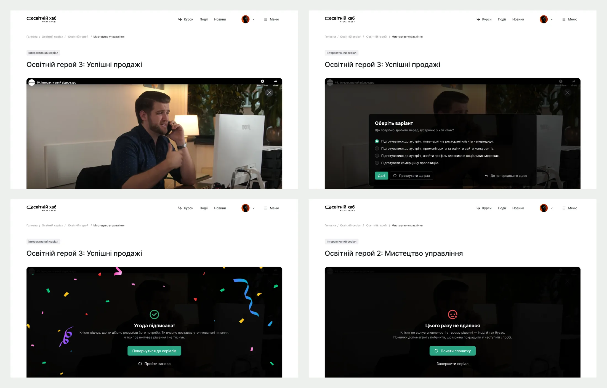
Interactive series: each choice has its own outcome.
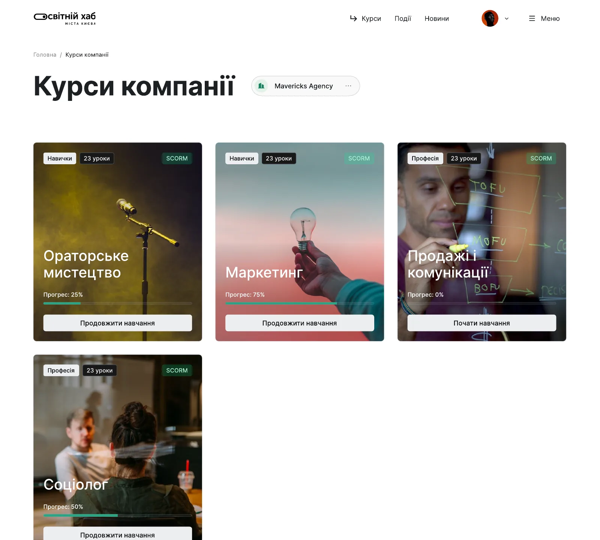
Company courses with progress on each card.
04 · Motivation
A career roadmap turns a long programme into the next small step.
The “Stepping into Job” programme asks a learner to complete ten steps: a career-guidance test, an interactive résumé, a video introduction, four career mini-courses, three external courses, a language test, a career challenge, a mock interview, a goals map and a mentor. A practical-experience step is optional. Listed as a page of tasks, that is overwhelming.
I designed it as a roadmap that lives on the home page and in the profile.
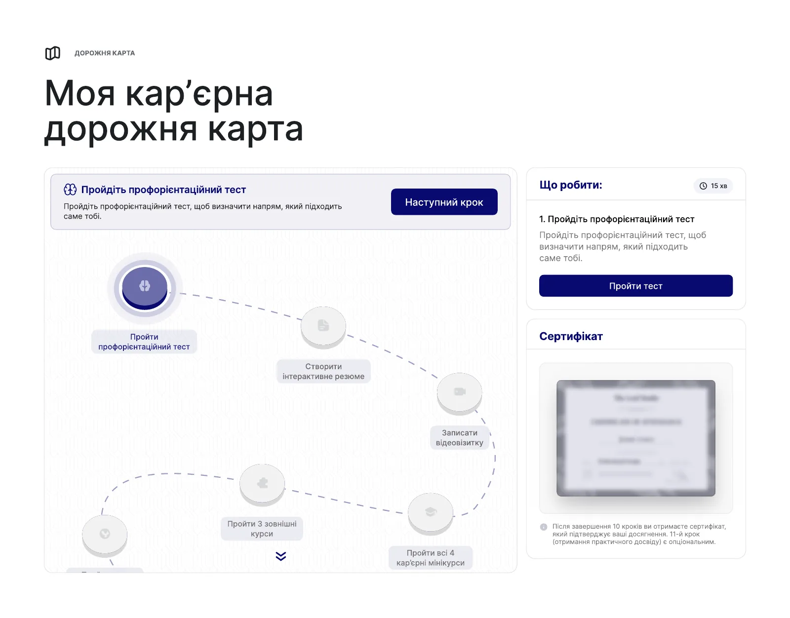
The roadmap on the home page: the current step is highlighted, the panel says what to do and how long it takes, and the certificate waits at the end.
One next step, always visible
Why. A long list makes people postpone. The roadmap shows the whole path but highlights only one step, with a single button (“Next step”) and a time estimate (“15 min”). A small, concrete task with a known cost is easier to start.
Progress you can see, and a reward at the end
Why. People work harder as they see themselves getting closer to a goal. Completed steps turn green on the path, and the blurred certificate is visible from the first day, so the end is concrete. Achievements in the profile, including locked ones, show what else can be earned.
A mentor confirms each step
Why. A step is complete only after a mentor reviews it. The panel spells this out: what to do, where to upload the link, and that a mentor will check it. Then it says “Task confirmed — move on to the next step”. Knowing that someone will look at the work raises its quality, and the confirmation is a moment of recognition.
Trade-off. Mentor review slows the path down. I kept it, because the certificate is only worth something if the steps behind it were checked.
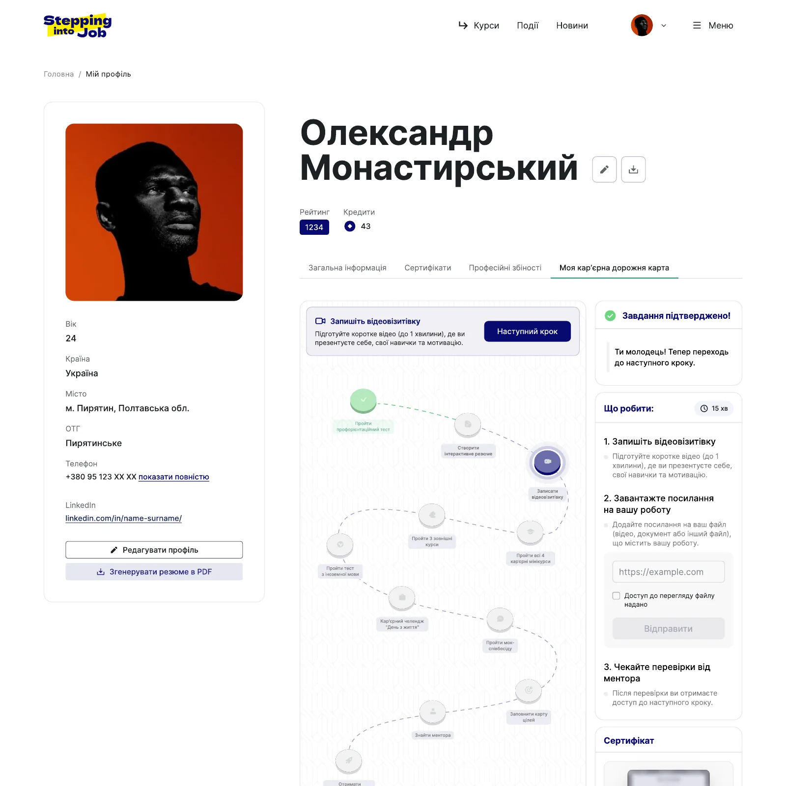
In the profile: a confirmed task, then the next one with instructions and a link field.
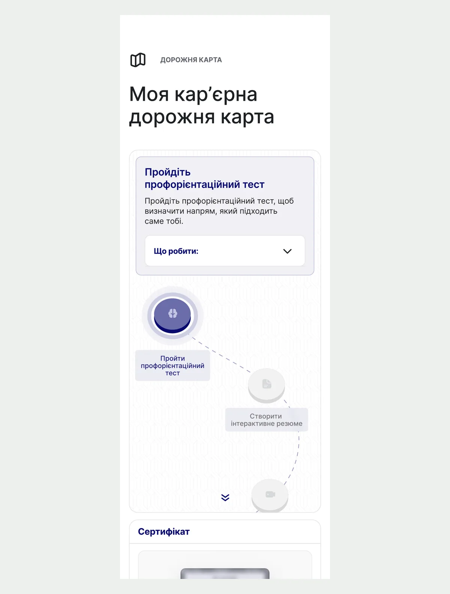
On mobile the path runs vertically, and the “What to do” panel folds into the card.
What I would measure: share of learners who start step 2 after step 1, median time between steps, and how many reach the certificate.
05 · Proof of skills
The certificate became something an employer can check.
Problem. Learners come here to get a job. A certificate locked inside the platform, or a PDF anyone could edit, doesn’t help with that, and the “interactive résumé” existed only on the landing page.
Change. The profile collects work experience, education, languages with the tested level, achievements and certificates, and can be exported as a PDF résumé. Anyone can verify a certificate by its number, and each course has a public list of graduates.
Why. The value of a certificate depends on whether a third party trusts it. A verifiable record makes the learner’s effort usable outside the platform, which is the reason they came.
Measure. Résumé exports and certificate verifications per month.
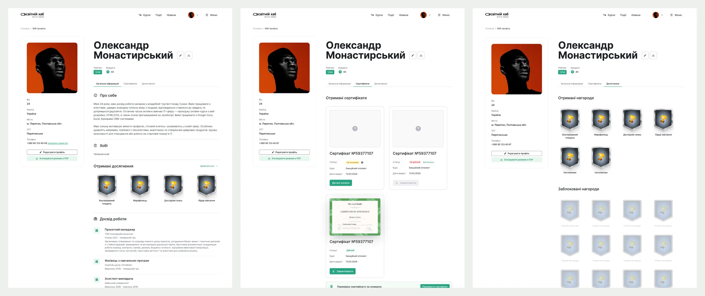
The profile as a résumé: experience, education, language level, then certificates and achievements, including locked ones.
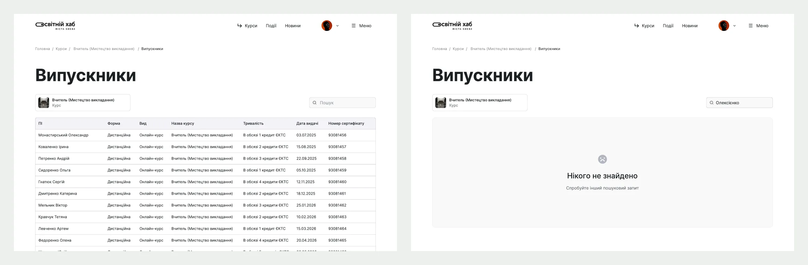
Public graduates registry with search, and the empty result.06 · States
Every list has a plan for when it is empty.
Why. A new learner sees empty pages first: no courses, no homework, no certificates. That first visit decides whether they come back, so an empty page must never be a dead end. Each empty state says what will appear there and links to the action that fills it.
Events show registration status (confirmed, waiting, declined, finished), and consultation booking says when a day has no free slots instead of failing silently.
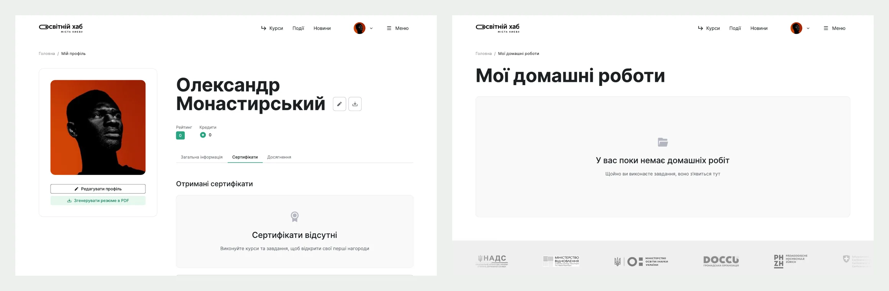
Empty certificates and homework: each says what will appear and how to get it. The certificates tab also offers verification by number.
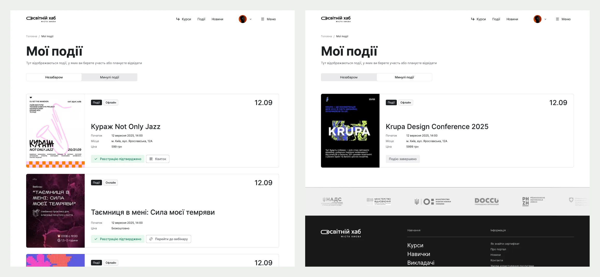
My events: upcoming and past, with a status on every card.
07 · System & handoff
One system, three screen sizes, ready for development.
I built the file as a system: text, colour and effect styles, a layout grid, and components such as course, event and teacher cards, certificate and award items. Pages have laptop, tablet and mobile versions, and each section is marked “Ready for dev” only when its states are complete.
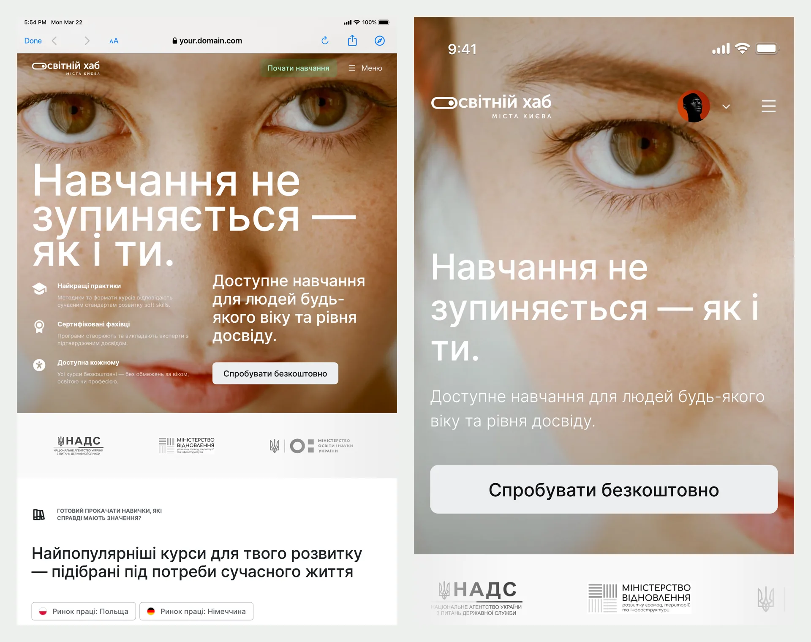
The home page on tablet and mobile.
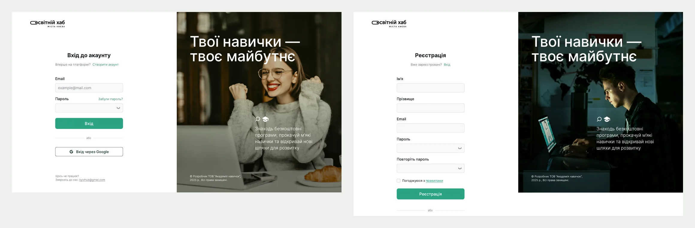
Log in and sign up, with Google login.
08 · What I learned
What I learned, and what I’d change.
What I learned
Two variants settle a debate faster than opinions. Showing users two course-page wireframes ended a discussion that could have taken weeks.
Motivation is a design problem. A long programme becomes doable when the interface shows one next step, how long it takes, and the reward at the end.
A redesign starts with structure, not visuals. Most problems in the old site were about where things lived and what they were called, not how they looked.
What I’d do differently
Test more than one decision. Comparing two variants in interviews settled the course page quickly. I’d run the same kind of test on the catalog filters and the roadmap.
Agree on metrics before launch. Every decision above has a metric. I’d record a baseline on the old site first, so the redesign can be judged by numbers.
Plan empty states earlier. I designed them after the main screens. Starting from them would have shaped the onboarding sooner.
business.olx.ua is where companies learn about and buy OLX’s business tools: placement packages, advertising, company profiles, delivery, analytics. I redesigned the portal, designed a new smart search with an AI assistant, and rebuilt the category analytics so sellers can price and plan.
ScopePortal redesign, Smart Search, Analytics
RoleSole designer
TeamMavericks Agency, client PM
ClientOLX for Business
PlatformWeb · desktop, tablet, mobile
My partFlows, states, UI, responsive
About this case
Client work done at Mavericks Agency. I was the only designer on the project. The brief for Smart Search came from the client’s product manager; the flows, states and interface are mine. I don’t have post-launch data, so this case is about the problems and the reasoning behind each decision.
01 · Context
A business portal that grew page by page.
The portal serves small shops, recruiters, real-estate agencies, car dealers and service providers. Each of them comes with a narrow question: which package fits my category, how do I promote a listing, what changes with the new payment rules, is my price competitive.
The answers existed, but they were spread across dozens of landing pages, a blog, a business school and guides, each built as a separate campaign. Finding one meant knowing where it lived.
The goal I worked towards: a business owner should get from a question to an answer, or to the right tool, without knowing how the site is organised.
Constraints. I was the only designer, working inside OLX’s existing brand. Smart Search started from a product manager’s brief, so the scope was set before I joined. There was no budget for research with sellers, so my decisions rest on the old pages, the brief and established usability principles. Every page needed desktop, laptop, tablet and mobile versions, and the legal pages had to stay accurate to the law while becoming readable.
02 · Before → after
One structure for every page.
The old category pages were built like posters: a large photo, a slogan in capitals, then sections in a different order on every page. Content was copied between them; the Jobs page still said “the largest base of real-estate listings in Ukraine”. I introduced one structure that every category page follows: who you can reach and the key numbers, the tools for this category, proof, then help from a manager. A recognisable shape means people learn the site once.
The visual language is new too: covers with a recurring angled shape, cards with one action each, and a calm teal palette that leaves colour for buttons and data.
Old portal
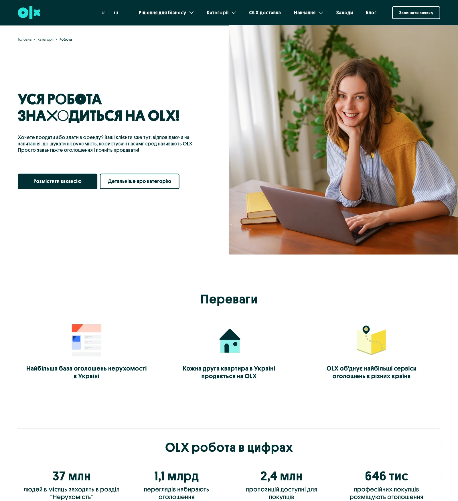
OLX Jobs before: a slogan, then benefits and numbers about real estate.Redesign
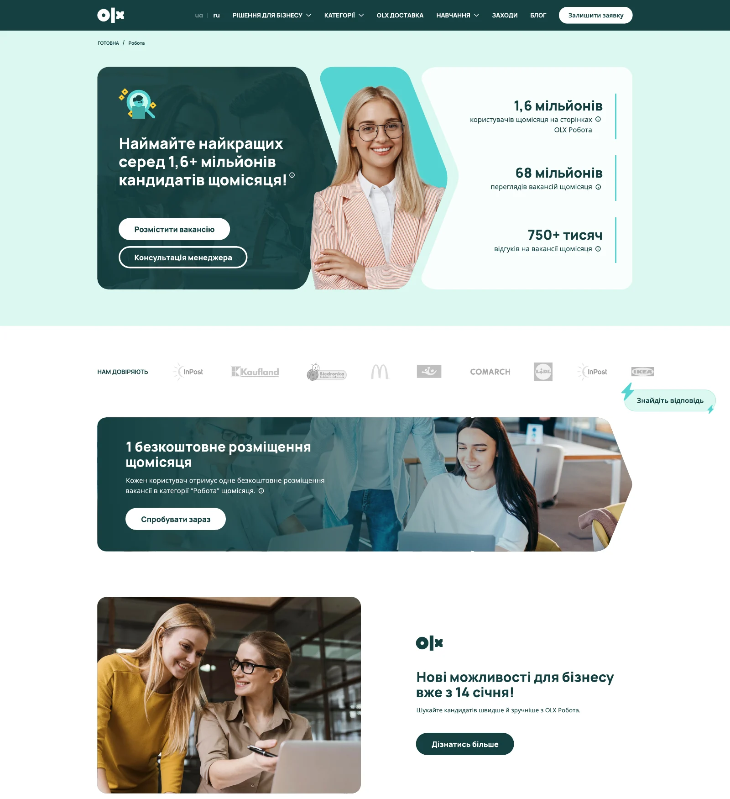
OLX Jobs after: how many candidates you reach, then the tools for recruiters.
03 · Smart Search
Search that never ends in a dead end.
The PM’s brief: let business clients search all the portal’s content, and add an AI assistant for questions that a list of pages can’t answer. I designed how the two work together, every state of both, and how the feature is introduced.
Results that say where they lead
Problem. The portal mixes service pages, articles and videos with similar titles. A list of titles alone makes people open results one by one.
Change. Suggestions appear as you type. Each result shows the path to it on the site, its address and a type label: Page, Video or Article. Popular queries sit underneath as starting points.
Why. The path and the type answer “is this what I need?” before the click. People choose by format: someone who wants a quick fact skips a video.
Measure. Share of searches that end in a click; how often people come back to the results and pick another one.
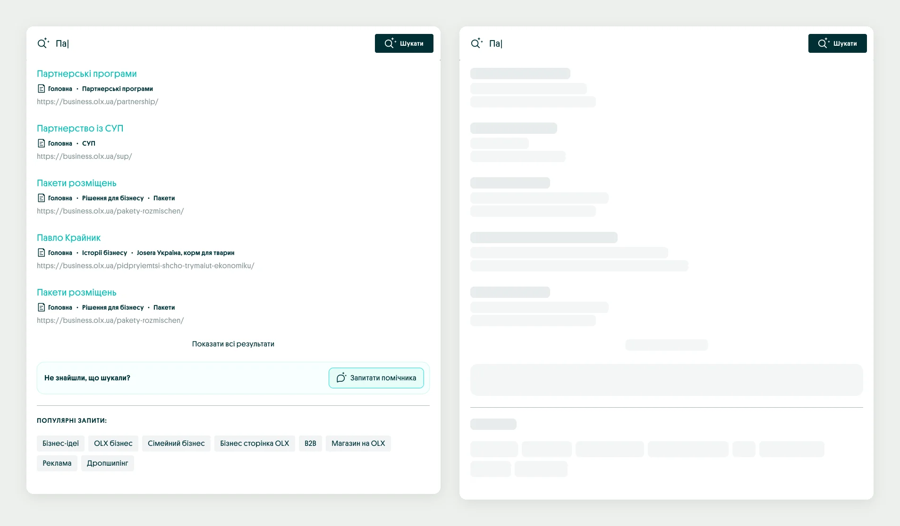
Suggestions while typing, and a skeleton in the same layout while results load.
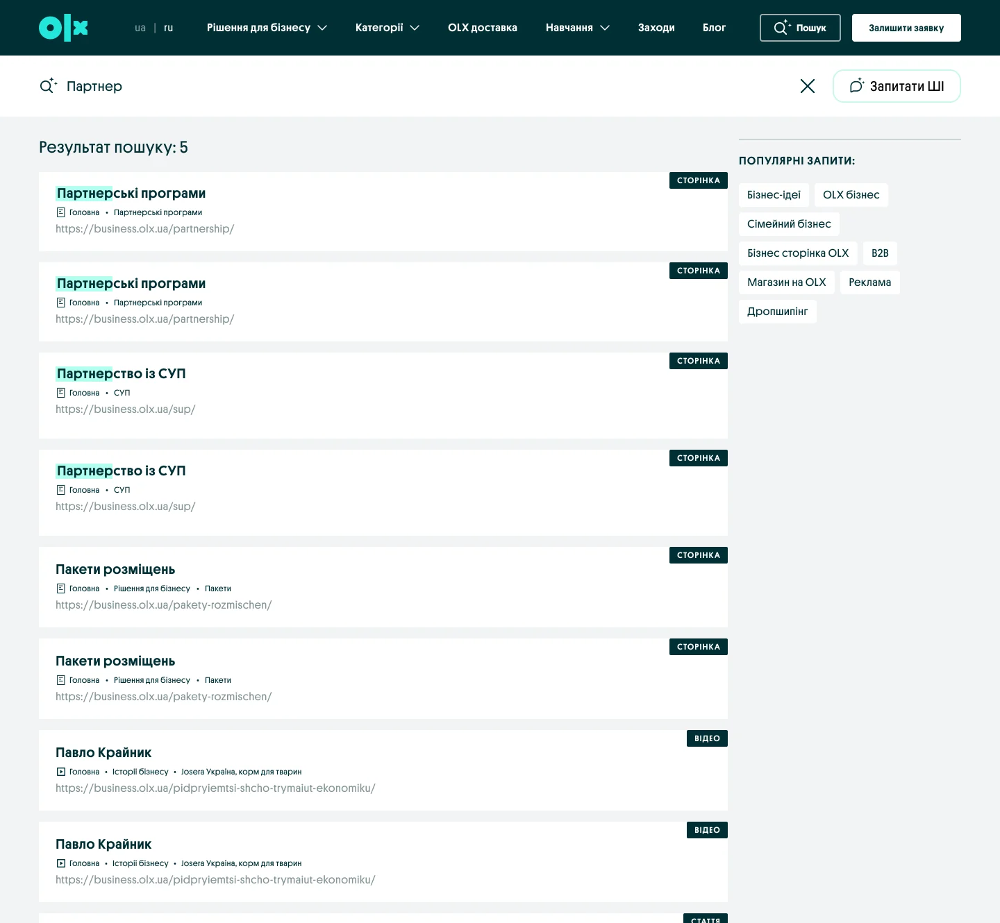
The full results page: type labels on the right of each result, popular queries beside the list.
No results is a starting point, not an error
Problem. Business owners use their own words, not the portal’s. An empty page with “Nothing found” sends them away.
Change. The empty state offers a corrected query (“Did you mean…”), similar materials, and a hand-off to the assistant: “Didn’t find what you were looking for? Ask the assistant.” The same hand-off sits in the dropdown and at the end of every results page.
Why. When keywords fail, a question in plain words often works. Offering the assistant exactly at that moment turns a failed search into a second attempt.
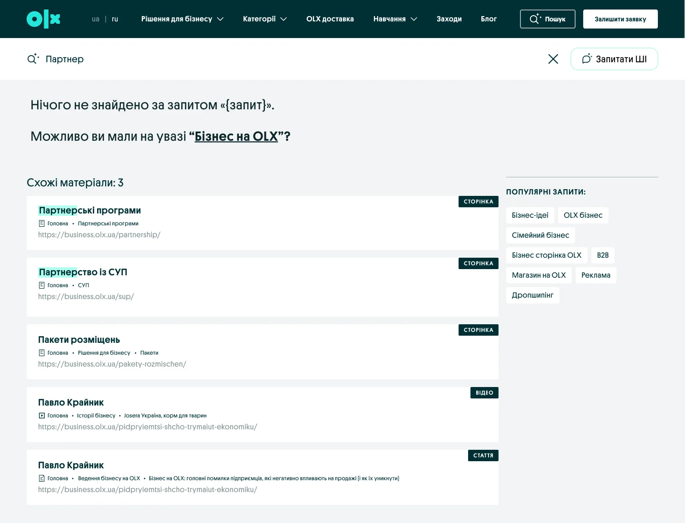
No exact match: a corrected query, three similar materials and a way to ask the assistant.
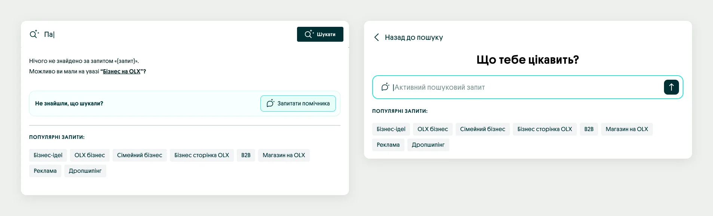
The hand-off: from an empty dropdown to the assistant, with “Back to search” always available.
An assistant that shows its sources and admits when it doesn’t know
Problem. An AI answer about packages or payment rules is only useful if a business owner can trust it. A confident wrong answer costs them money.
Change. Every answer ends with “Materials the answer was based on”, linking to the portal pages. When the assistant can’t find an answer, it says so and suggests rephrasing, instead of guessing. While it works, it says “Already working on it…”.
Why. Sources let people check the answer and continue to the real page. An honest “I couldn’t find it” keeps trust for the times the assistant does answer.
Trade-off. The sources take space below every answer. I kept them, because the portal’s own pages are where people buy, and the assistant should lead there.
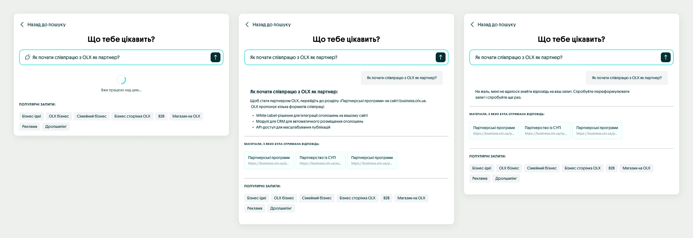
Three assistant states: working on it, an answer with its sources, and no answer found.
Introducing the feature: one popup, both entry points, no tour.The same explain-in-place pattern elsewhere: how each ad service works and when to use it.
On mobile, search opens full screen; the assistant and the hand-off work the same way.04 · Analytics
Analytics that help a seller decide on a price.
A seller looks at category analytics before listing or repricing: is there demand for this, what do others charge, where do buyers search. The old page opened with category totals and a volume chart; prices were a tab further in. In the redesign the page opens with the question a seller actually has: what does this exact item sell for.
Old portalThe same category before: it opens on totals; prices are in a separate tab.RedesignThe same category after: it opens on prices, with search for an exact item.
A price range, not just an average
Problem. Classified prices are noisy: a few very cheap or very expensive listings pull the average away from what most items sell for.
Change. The price chart shows the median and a shaded range that covers 90% of listings. Filters narrow it to one model, subcategory and region.
Why. A seller doesn’t need the average; they need to see whether their price sits inside the normal range or outside it. The range answers that at a glance.
Trade-off. A range is harder to read than a single line. I added a legend under the chart and kept one colour for the whole series.
Demand split by when and where
Change. A second tab shows demand: activity by day of the week and hour, views per subcategory, and a map of the regions where buyers search for the item.
Why. These answer practical questions: when to post, which subcategory to list in, and whether delivery to other regions is worth offering.
Overview: who sells, what is listed most, and how listings and views change over time.
Where buyers search: a map and a ranked list of regions.Loading keeps the axes and filters in place, so the screen doesn’t jump when data arrives.
05 · Packages & cart
Packages you can compare in one look.
A comparison table instead of three long lists
Problem. Packages were three cards with long feature lists, where missing features were shown as greyed-out lines. To compare, people read three columns line by line.
Change. One table: rows for each feature, columns for Basic, Standard and Ultra, ticks and dashes, a switch for the business category, and a buy button under each column. In additional placements, the recommended option is marked “Optimal package”.
Why. A table puts the differences on the same line, so the choice is about the rows that matter to you. Marking one option as recommended helps people who don’t want to compare at all.
Measure. Clicks on “Buy package” per visit; the split between packages.
Old portalThree long lists to read side by side.RedesignOne table, filtered by business category.
Additional placements: choose a period, compare three options, the recommended one is marked.A new feature, the cart, explained as six steps with interface snippets.
06 · Complex rules
New rules, explained for your situation.
New laws changed how sellers on marketplaces are verified and taxed. The rules differ for a private seller, a registered business and a buyer, and the original text is long and legal.
Start with “who are you?”
Change. The page asks people to pick their situation: I sell my own things, I’m a sole trader or company, I buy. Only the rules for that situation are shown, with a short list of what to do.
Why. Most readers need a third of the page. Choosing first removes everything that doesn’t apply to them.
Show the threshold, don’t describe it
Change. The tax rule is a bar: 0% up to €2,000 of sales a year, 10% above it. Key dates are a timeline, and the next steps are three numbered cards.
Why. A number on a scale is easier to place yourself on than a sentence with conditions.
Pick your situation, see only your rules, and what happens if you skip verification.The tax threshold as a scale.07 · Responsive
Every page at every screen size.
Every page, Smart Search and analytics included, has desktop, laptop, tablet and mobile versions. The hardest part was tables: on mobile the package table becomes a switch between Basic, Standard and Ultra, showing one column at a time with the same rows, instead of a table you have to scroll sideways.
Mobile: services, packages with the package switch, and the payment rules page.08 · What I learned
What I learned, and what I’d change.
What I learned
A failed search is a design moment. The point where keywords stop working is exactly where to offer a different way to ask, here the assistant.
AI answers need receipts. Showing the sources behind an answer, and admitting when there isn’t one, matters more for trust than the answer’s tone.
Consistency scales better than polish. One page structure across dozens of pages did more for findability than any single beautiful page.
What I’d do differently
Test the assistant’s wording with sellers. The states are designed, but phrases like “Ask the assistant” and the no-answer message deserve a quick test with real business owners.
Agree on search metrics before launch. Zero-result rate, searches that end in a click, and how often people switch to the assistant would show whether the hand-off works.
Start from the analytics questions. I would interview a few sellers about the decisions they make before listing, and design the charts from those questions.
ZELENA is a Kyiv gift gallery and flower shop that has sold online since 1997. I audited the whole purchase path of zelena.ua and turned the findings into 35 prioritised hypotheses and an executive summary that shows the business benefit in numbers: how much extra revenue fixing the problems is likely to bring.
An expert review done for a Mavericks Agency client. It is based on best practices and published research, not on the store’s analytics, so the money forecast uses an example store and is meant to be checked with real data and A/B tests.
01 · Context
A well-known store that hides its best arguments.
ZELENA has 8,000+ products, 50 world brands, its own import, free gift wrapping and delivery across Kyiv in 1–2 hours. On the site, most of that sits just above the footer or inside a long SEO text. The catalogue is organised by product type and brand, while a gift buyer thinks “something for mom, up to 3,000 UAH”.
The brief. The agency wanted to offer the client two services: a UX audit based on best practices, and a deeper CRO audit with GA4 and heatmaps. My task was the first one, in a format a business owner reads to the end: what is wrong, what to change, and what it is worth.
02 · Method
Six page types, two devices, one scoring rule.
I went through the live site on desktop and mobile as a gift buyer: home page, navigation and search, category, product page, cart and checkout. Each problem became a hypothesis with a screenshot, the proposed change and a real example of the pattern, mostly from Bloom & Wild.
Every hypothesis has an ICE score, the average of Impact, Confidence and Ease. A score of 7.3 or higher means high priority, 6.0 or higher means medium. The deck opens with the summary; the details follow page by page.
The opening slide: 35 growth points, 12 of them high priority, split by page.03 · Hypothesis table
A table the team can work from.
The deck is for the conversation with the client; the table is for the people who will make the changes. Each row has the problem, the device, a link to the screenshot, the hypothesis, an example and the ICE score. Colour shows priority, so the team can sort and start at the top.
The Audit tab (a fragment). Every hypothesis links to its screenshot and to a working example.04 · Summary in numbers
The summary shows what the fixes are worth.
A list of problems doesn’t tell an owner whether the work pays off. So the audit ends with an executive summary that describes the business benefit in numbers. I grouped the hypotheses by the step of the funnel they affect and gave each group a low and a high effect. For checkout and delivery costs the ranges rest on Baymard Institute research; the rest are marked as expert estimates.
Because the effects multiply, for an example store with $10,000 of online revenue a month the forecast is +17% conservative, +25% expected and +33% optimistic, or about +$29,600 a year in the expected case, with the same traffic and no extra ad budget.
Impact by problem: each group, the funnel step it moves and the extra revenue per month.All together: conservative, expected and optimistic revenue after the fixes.The Conclusions tab. The revenue cell is an input: the client puts in their real figure and the forecast updates.05 · Priorities
Start with the cheap changes that matter most.
The highest scores went to things that cost little to fix: the key advantages sit at the very bottom of the home page, fresh-flower delivery limits appear only in the cart, there is no reassurance under the Buy button, and checkout asks for a patronymic twice.
The top of the priority list, with the page and the metric each change moves.06 · What I learned
What I learned, and what I’d change.
What I learned
Owners read numbers, teams read rows. One audit needs two formats: a short story with money for the decision, a sortable table for the work.
A forecast needs its sources on the page. Marking which ranges come from research and which are estimates makes the numbers easier to trust, not harder.
What I’d do differently
Get real data first. With GA4 access the forecast would use ZELENA’s own funnel instead of an example store. That is the next step, the CRO audit.
Watch a few real buyers. Five short sessions would confirm the top hypotheses before anything is built.
Prediction markets let people trade on the outcome of real events, and the interfaces are borrowed from crypto exchanges: dense, fast and easy to misread. I designed a terminal that keeps the data density active traders need, but makes every order clear before money moves: what you pay, what you can win, how the market resolves and what happens if the price jumps.
A self-initiated concept, built quickly as a coded prototype. I trade crypto myself, so the problems come from my own use and from reviewing popular prediction-market and exchange interfaces. It has not been tested with traders yet; that is the next step, and the case says where my reasoning would need evidence.
01 · Problem
Fast to trade, easy to misread.
Reviewing popular prediction-market terminals and crypto exchanges, I kept meeting the same gaps. A price of 62¢ is really a 62% chance, but the ticket rarely says what that means for your money. How the market resolves is hidden behind a “Rules” tab, yet it is the one thing that decides whether you win. Large orders move the price, and the user learns the real average price only after the fill. And charts show that the price jumped, not why.
The goal: keep the density an active trader expects, and remove every surprise between “I want to buy” and “I bought”.
02 · Layout
Three columns: find, understand, act.
Trending markets sit in a strip under the navigation, each with its price and daily change. The market takes the main column: a candlestick chart, then one summary card with the chance as the hero number, volume, liquidity and spread, and the resolution rule with its source, not hidden in a tab. The order ticket stays on the right, so the action never scrolls away. The visual language is dark glass with one blue accent; green and red are kept only for Yes, No and profit or loss, so colour always means something.
The terminal at 1440px. Prices use tabular figures, and the order book a monospaced font, so columns stay aligned while numbers update.One card answers “where is this market now?”: chance, change today, liquidity and how it resolves.
News on the chart
Problem. A line that jumps from 48% to 56% tells you something happened, not what.
Change. Events that moved the market sit on the candlestick chart as labelled markers: “Eurozone CPI 2.1%”, “Lagarde speech”. The current price is pinned on the right axis.
Why. Traders decide whether a move is noise or news. Putting the cause next to the move saves a trip to another tab.
An order book that reads at a glance
Change. Asks in red, bids in green, depth bars behind each row, the spread and last price between them, and a dot that marks the user’s own resting order.
Why. Depth bars show where liquidity sits without reading numbers; the dot answers “where is my order?” without opening another list.
03 · Order ticket
Say what the order means in money.
Payout and max loss before you click
Problem. “3,962 shares at 63.1¢” is precise but doesn’t answer the real question: what do I get, and what can I lose?
Change. The summary shows average price, shares, price impact and fee, then payout if Yes and max loss. Under it, one plain sentence: “You pay $2,500. If the ECB cuts in December you get $3,962. If it doesn’t, you lose what you paid.”
Why. Experienced traders read the numbers; newer ones read the sentence. Both see the same truth before they commit.
Trade-off. The sentence adds height to a dense ticket. I kept it because it is the only place the outcome is said in words, and it disappears for limit orders, where the payout is not known yet.
04 · Price protection
If the price moves, ask again.
Warn before, pause after
Before. When an order will move the price by more than 1%, the ticket says so and offers a limit order as the alternative, with its own trade-off: it may not fill right away.
After. With protection on, if Yes moves from 62¢ to 64¢ while the user reviews, the order is paused, not filled, and nothing is charged. The dialog puts “when you started” next to “now”, shows the new payout, and offers two clear choices: buy at the new price, or place a limit at the old one.
Why. Slippage is where trust breaks: people blame the product, not the market. Showing the change and asking again turns a bad surprise into a decision.
05 · Mobile
On a phone, the ticket is a sheet.
On a phone the market screen keeps what a trader checks first: the chance and its change, time to close, volume, liquidity and spread, a candlestick chart with the key news marker and the current price, the resolution rule and the user’s own position with its profit. Two buttons stay at the bottom, “Buy Yes 62¢” and “Buy No 39¢”. Tapping one opens the ticket as a sheet with the same payout, max loss and plain-language sentence as on desktop. The order book moves to its own tab, because on a small screen the decision matters more than the depth.
06 · Brand in 3D
The mark, made into a coin.
Crypto products live on their visuals: launch banners, app icons, social posts. I modelled the Odds mark as a 3D coin in Spline to give the brand a hero object for these places. The coin and the raised mark use metal materials, coloured point lights add the violet and blue reflections from the product palette, and a directional light casts the shadow that makes the mark read as relief.
I built the scene by hand: geometry, materials, lighting and shadows, and exported it for the web.
Five sessions with active traders. Does the plain-language sentence help or slow them down? Do they trust a paused order, or find it annoying?
Default protection level. 1¢ is my guess; the right default depends on market liquidity and should come from data.
Metrics. Share of orders cancelled after fill, support tickets about “wrong price”, and how often people switch from market to limit after the warning.